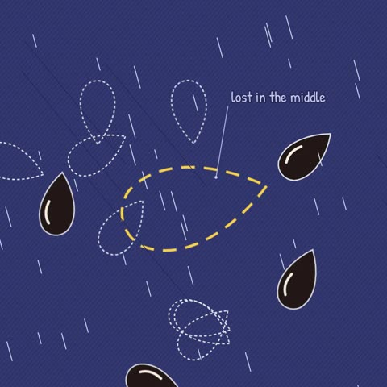
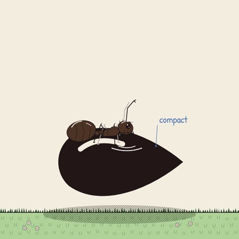
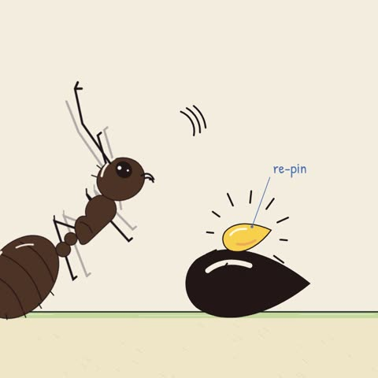

Why your AI agent forgets
Your agent didn't get dumber. Its context window got full.




What's happening
Every message adds tokens. The model can only "see" what fits in its context window: your instructions, the conversation, tool results, files. It all competes for the same space.
Your first instruction sinks. As a session grows, what you said at the start ends up buried in the middle of a long context.
The middle gets the least attention. Language models use information at the start and end of a long input more reliably than information in the middle. This is the "lost in the middle" effect. So long before the window is technically full, the thing you care about can stop being followed.
The three fixes
never touch prod in the project's instructions file, not in message 3 of a 200-message chat.Quick checklist
☐ Long session? Compact it.
☐ Critical rule? Put it in the system prompt / instructions file.
☐ Big paste? Replace it with targeted retrieval.
☐ Agent "forgot"? Check where the instruction sits, not just whether it's there.
Source for the middle effect: Liu et al., "Lost in the Middle: How Language Models Use Long Contexts" (2023).
More episodes → @butter.explains